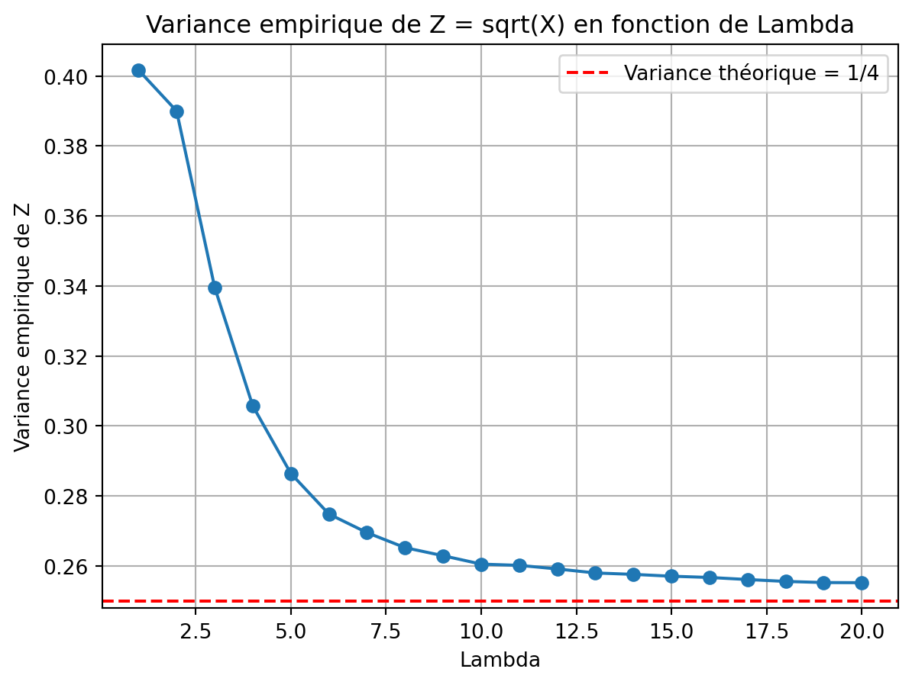
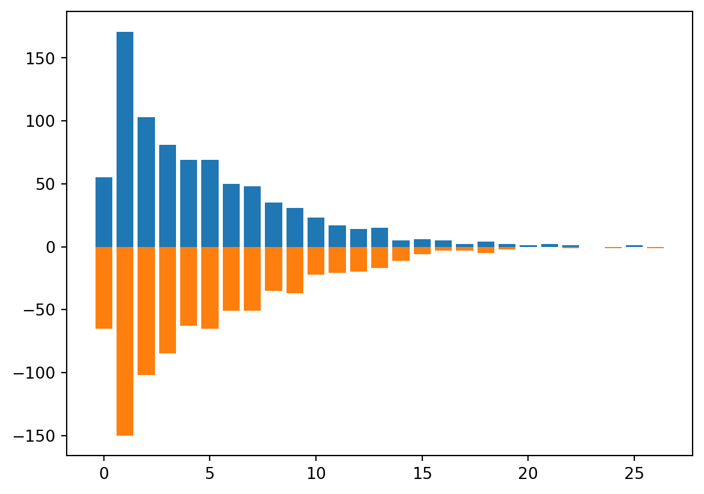

import pandas as pd
import numpy as np
import matplotlib.pyplot as plt
import statsmodels.api as sm
import statsmodels.formula.api as smf
from scipy.stats import chi2_contingency13 Régression de Poisson
Exercice 1 (Questions de cours) C, A, B, A, B, B, C, A
Exercice 2
Exercice 3
Exercice 4 (Stabilisation de la variance)
lambdas = np.arange(1, 21)
sample_size = 1000000
variances = []
for lam in lambdas:
X = np.random.poisson(lam, sample_size)
Z = np.sqrt(X)
variance_Z = np.var(Z)
variances.append(variance_Z)
plt.plot(lambdas, variances, marker='o')
plt.axhline(y=0.25, color='r', linestyle='--', label='Variance théorique = 1/4')
plt.xlabel('Lambda')
plt.ylabel('Variance empirique de Z')
plt.title('Variance empirique de Z = sqrt(X) en fonction de Lambda')
plt.legend()
plt.grid(True)
plt.show()
Exercice 5 (Stabilisation de la variance (suite)) Lorsque \(\lambda\) est grand, on utilise t’approximétion de Taylor à l’ordre 1 : \[ \sqrt{X}\approx \sqrt{\lambda}+\frac{1}{2\sqrt{\lambda}}(X-\lambda). \] Comme \(\mathop{\mathrm{V}}(X)=\lambda\), on déduit \(\mathop{\mathrm{V}}(\sqrt{X})\approx 1/4\).
Exercice 6 (Malaria (suite))
Malaria = pd.read_csv("../donnees/poissonData3.csv", header=0, sep=',') compt = Malaria[["Sexe", "Nmalaria", "Age"]].groupby(["Sexe",\ "Nmalaria"]).count() sexe = list(compt.index.levels[0]) signe = [1, -1] for i, val in enumerate(sexe): plt.bar(compt.loc[val].index, signe[i] * compt.loc[val].Age)
Les barres sont superposées : les filles puis les garçons. Comme on soustrait à la hauteur totale les garçons (argument
offset), on a les effectifs des filles en dessous et ceux des garçons au dessus.Les moyennes par groupe
print(Malaria[["Sexe", "Nmalaria"]].groupby(["Sexe"]).mean())Nmalaria Sexe F 4.579012 M 4.794370::: {#7aa664f5 .cell execution_count=5}
{.python .cell-code} print(np.log(Malaria[["Sexe", "Nmalaria"]].groupby(["Sexe"]).mean().loc["F", :])) print(np.log(Malaria[["Sexe", "Nmalaria"]].groupby(["Sexe"]).mean()).diff().iloc[1])::: {.cell-output .cell-output-stdout}
Nmalaria 1.521483 Name: F, dtype: float64 Nmalaria 0.045959 Name: M, dtype: float64::: :::Régression de Poisson
modSexe = smf.glm("Nmalaria ~ 1 + Sexe", data=Malaria, family=sm.families.Poisson()).fit() modSexe.summary()Generalized Linear Model Regression Results Dep. Variable: Nmalaria No. Observations: 1627 Model: GLM Df Residuals: 1625 Model Family: Poisson Df Model: 1 Link Function: Log Scale: 1.0000 Method: IRLS Log-Likelihood: -5250.8 Date: Tue, 04 Feb 2025 Deviance: 5706.3 Time: 16:05:15 Pearson chi2: 5.98e+03 No. Iterations: 5 Pseudo R-squ. (CS): 0.002471 Covariance Type: nonrobust coef std err z P>|z| [0.025 0.975] Intercept 1.5215 0.016 92.661 0.000 1.489 1.554 Sexe[T.M] 0.0460 0.023 2.006 0.045 0.001 0.091 Nous retrouvons que le coefficient constant (
Intercept) est le logarithme népérien de la moyenne du nombre de visites chez les filles. La modalité fille est la première modalité de la variableSexepar ordre alphabétique et constitue la modalité de référence. Le coefficient constant est ici le logarithme (qui est la fonction de lien) de la moyenne du nombre de visites chez les filles. L’effetMest ici la différence des logarithmes ce que nous retrouvons dans le second coefficient.
Exercice 7 (Table de contingence et loi de Poisson)
data_crosstab = pd.crosstab(Malaria['Prev'],Malaria['Sexe'],margins = False) print(data_crosstab)Sexe F M Prev Autre 2 6 Moustiquaire 557 543 Rien 223 233 Serpentin/Spray 28 35res = chi2_contingency(data_crosstab) res.pvalue0.3697755421416906::: {#257ea9e5 .cell execution_count=9} ``` {.python .cell-code} Malaria[“Sexe”] = Malaria[“Sexe”].astype(“category”) Malaria[“Prev”] = Malaria[“Prev”].astype(“category”)
# Grouper les données par ‘Sexe’ et ‘Prev’ et calculer les effectifs et la somme de ‘Nmalaria’ result = Malaria.groupby([‘Sexe’, ‘Prev’]).agg(effectif=(‘Nmalaria’, ‘size’), Y=(‘Nmalaria’, ‘sum’)).reset_index() print(result) ```
::: {.cell-output .cell-output-stdout}
Sexe Prev effectif Y 0 F Autre 2 8 1 F Moustiquaire 557 2509 2 F Rien 223 1073 3 F Serpentin/Spray 28 119 4 M Autre 6 24 5 M Moustiquaire 543 2548 6 M Rien 233 1134 7 M Serpentin/Spray 35 211::: :::::: {#b5309d23 .cell execution_count=10}
{.python .cell-code} mod1 = smf.glm("Nmalaria ~ -1 + Sexe:Prev", data = Malaria, family=sm.families.Poisson()).fit() mod1.summary()::: {.cell-output .cell-output-display execution_count=10}
Generalized Linear Model Regression Results Dep. Variable: Nmalaria No. Observations: 1627 Model: GLM Df Residuals: 1619 Model Family: Poisson Df Model: 7 Link Function: Log Scale: 1.0000 Method: IRLS Log-Likelihood: -5242.5 Date: Tue, 04 Feb 2025 Deviance: 5689.7 Time: 16:05:15 Pearson chi2: 5.95e+03 No. Iterations: 5 Pseudo R-squ. (CS): 0.01263 Covariance Type: nonrobust coef std err z P>|z| [0.025 0.975] Sexe[F]:Prev[Autre] 1.3863 0.354 3.921 0.000 0.693 2.079 Sexe[M]:Prev[Autre] 1.3863 0.204 6.791 0.000 0.986 1.786 Sexe[F]:Prev[Moustiquaire] 1.5051 0.020 75.389 0.000 1.466 1.544 Sexe[M]:Prev[Moustiquaire] 1.5460 0.020 78.036 0.000 1.507 1.585 Sexe[F]:Prev[Rien] 1.5710 0.031 51.462 0.000 1.511 1.631 Sexe[M]:Prev[Rien] 1.5825 0.030 53.289 0.000 1.524 1.641 Sexe[F]:Prev[Serpentin/Spray] 1.4469 0.092 15.784 0.000 1.267 1.627 Sexe[M]:Prev[Serpentin/Spray] 1.7965 0.069 26.096 0.000 1.662 1.931 ::: :::
Le modèle possède autant de paramètres que de points de design, il est donc saturé. On retrouve les estimations à l’aide du tableau de la question précédente. Par exemple, on a pour le premier estimateur :
::: {#10a92712 .cell execution_count=11}
{.python .cell-code} np.log(8/2)::: {.cell-output .cell-output-display execution_count=11}
1.3862943611198906::: :::mod2 = smf.glm("Nmalaria ~ -1 + Sexe + Prev", data = Malaria, family=sm.families.Poisson()).fit() mod2.summary()Generalized Linear Model Regression Results Dep. Variable: Nmalaria No. Observations: 1627 Model: GLM Df Residuals: 1622 Model Family: Poisson Df Model: 4 Link Function: Log Scale: 1.0000 Method: IRLS Log-Likelihood: -5246.4 Date: Tue, 04 Feb 2025 Deviance: 5697.6 Time: 16:05:15 Pearson chi2: 5.97e+03 No. Iterations: 5 Pseudo R-squ. (CS): 0.007828 Covariance Type: nonrobust coef std err z P>|z| [0.025 0.975] Sexe[F] 1.3523 0.178 7.613 0.000 1.004 1.700 Sexe[M] 1.3974 0.177 7.901 0.000 1.051 1.744 Prev[T.Moustiquaire] 0.1506 0.177 0.849 0.396 -0.197 0.498 Prev[T.Rien] 0.2013 0.178 1.130 0.258 -0.148 0.550 Prev[T.Serpentin/Spray] 0.2784 0.185 1.503 0.133 -0.085 0.641 Ce modèle n’est pas saturé. Il est identique au modèle
smf.glm("Nmalaria ~ Sexe + Prev", data = Malaria, family=sm.families.Poisson()).fit()mais propose une paramétrisation différente.
On calcule les AIC :
print(mod1.aic) print(mod2.aic)10500.991109809473 10502.88231091839On privilégie le modèle 1 pour ce critère. Le résultat ne contredit pas celui de la question 2 puisqu’une interaction n’est pas liée à l’indépendance entre 2 variables.